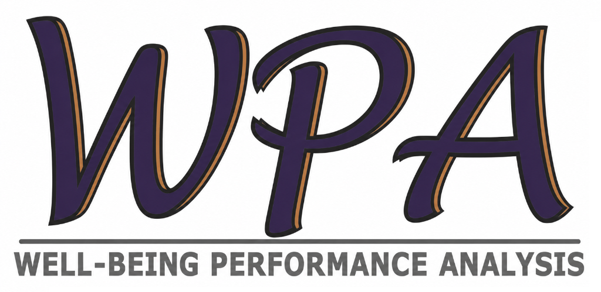

Caricamento questionario...
Il link utilizzato non è valido o il questionario non è al momento attivo.
Per informazioni contatta il tuo responsabile.

Come funziona
© Profexa Consulting – Well-Being Performance Analysis
Seleziona il gruppo/area aziendale di appartenenza. Questa è l'unica informazione che ti viene richiesta.
Le risposte sono anonime e non riconducibili alla tua persona
Domanda
01
Le tue risposte sono state registrate in modo completamente anonimo. Il tuo contributo è fondamentale per l'analisi del clima aziendale.
Risposte salvate con successo
Anonimato garantito – nessun dato personale raccolto
I risultati saranno elaborati dal team Profexa Consulting
© Profexa Consulting – Well-Being Performance Analysis